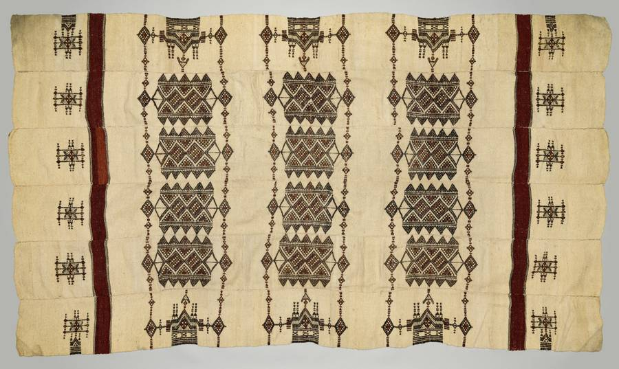

Peul
Ils se disent Fulbe au pluriel, Pullo au singulier.
Les appellations
Les shorts
Tout voir →D'où elles viennent
Chaque forme, sa langue d'origine, et qui l'emploie aujourd'hui.
Vient du wolof Pel, adopté par les colonisateurs français.
Aujourd'hui — usage dominant en français.
La forme haoussa, courante au Nigeria et en anglais.
Aujourd'hui — dominant en anglais, surtout au Nigeria.
Terme arabe (Tchad, Soudan), parfois associé aux Peuls en pèlerinage vers La Mecque. Considéré comme péjoratif dans certains contextes, associé à des stéréotypes de migrants indésirables.
Le nom qu'ils se donnent, au pluriel ; Pullo au singulier.
Aujourd'hui — les communautés elles-mêmes, et les travaux académiques.
Anecdotes et proverbes
Tout voir →

Ce que ces noms posent problème
Aucun de ces noms n'est celui qu'ils se donnent. Et Fulani sert souvent à ne désigner que les éleveurs nomades, en oubliant tous ceux qui vivent installés.
Les fiches
Pour aller au fond : chaque fiche, avec toutes ses sources.
Ce que l'atlas ne dit pas
Un silence déclaré, pas un oubli.
Personne n'est mieux placé qu'eux pour raconter leur histoire. Le chercher demande du travail, et ce travail produit des erreurs.
Si vous connaissez une source sur l'un de ces noms, elle sera lue.